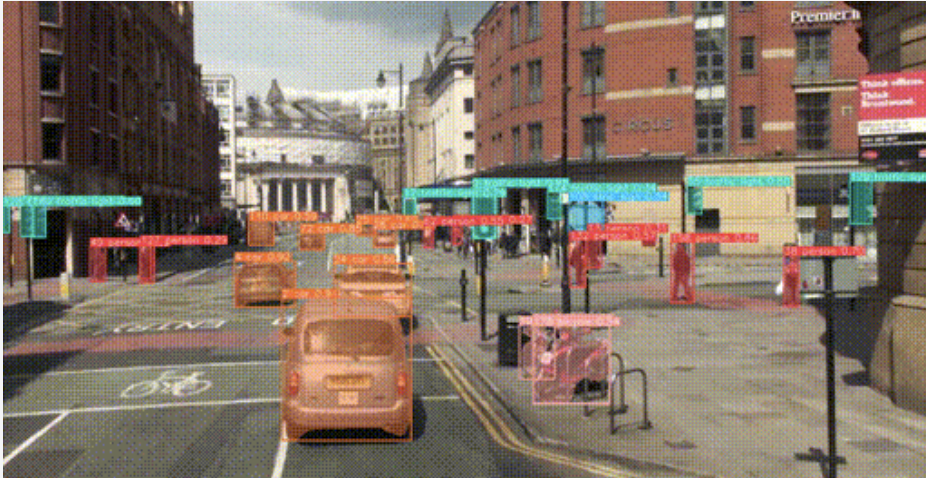

Project Stoplights
This project was a partner project that was my final project for CSCI 1470: Deep Learning. The project was open-ended, and my partner and I decided to use deep learning to detect stops at a crosswalk.
This project was technically intense. For starters, we had not covered object detection very deeply in class. Thus, we had to engage in a good deal of research on how best to detect cars and crosswalks. We trained an RCNN on our own synthetically created images of crosswalks and used a YoloV5 model we trained via a Jupyter notebook on a Roboflow dataset of cars. Once we created these models, we were able to algorithmically combine them to detect stops. In essence, we found the closest crosswalk, and if the distance between the two stayed relatively stable for a certain amount of time, we marked a stop. By default, cars were marked as running the stop sign unless they met this criteria.
While it was difficult to formally test our model since we had a limited amount of data, we were able to quantitatively confirm that our model worked well and detect when cars ran stop signs. This is one of the most satisfying projects I have ever worked on due to the amount of work that was required.
The below screenshot is not technically from our training data, but this was our Yolo object detection model that we used. It shows how accurate our vehicle detection model was. Oh, and it looks pretty cool :)
Project information
- Technologies Python, TensorFlow, PyTorch
- Type Class Project
- Project date Fall 2022
- GitHub Repo https://github.com/funnybear681/
ProjectStopLights